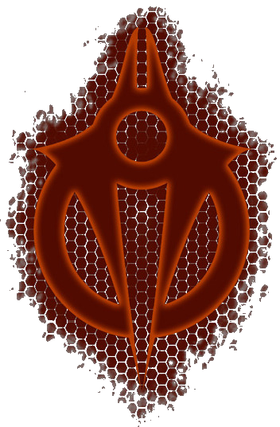

Hierarchy
"The universe does not abide weakness, and we are its ambassadors!"
The Hierarchy are an aggressive alien race bent on galactic conquest, stripping worlds they encounter of all valuable resources before moving on. The invasion force encounted in Universe at War: Earth Assault consists of a task force of the 'Hierarchy Remote Mining Operations' under the leadership Kamal Rex, Orlok the Eternal, and the treacherous Nufai.